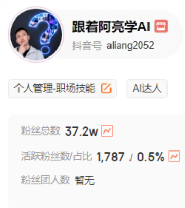
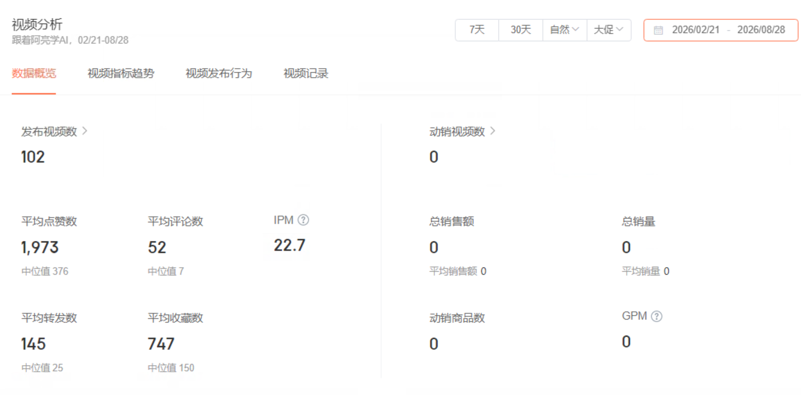
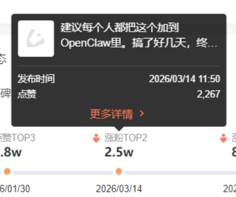
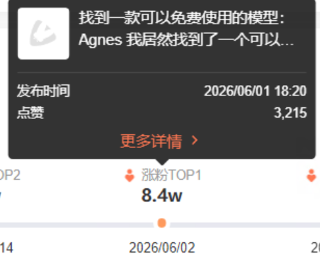
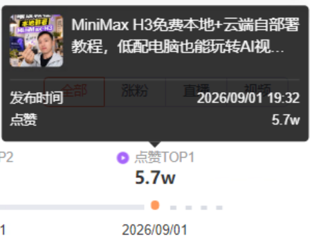
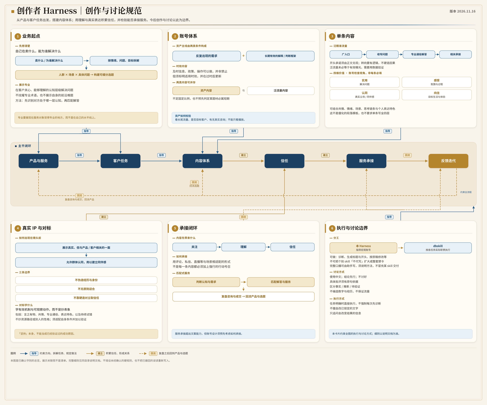
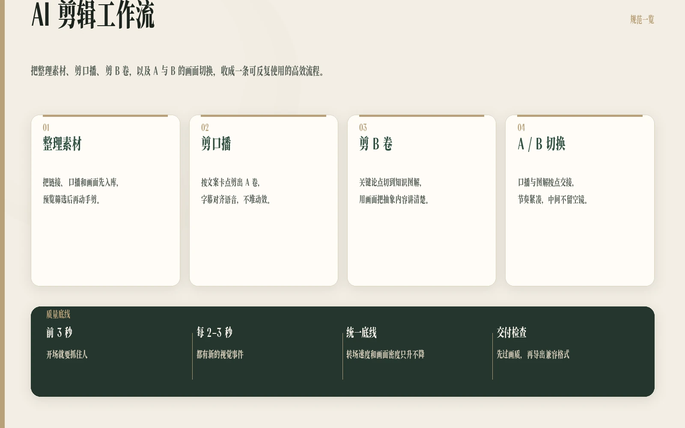
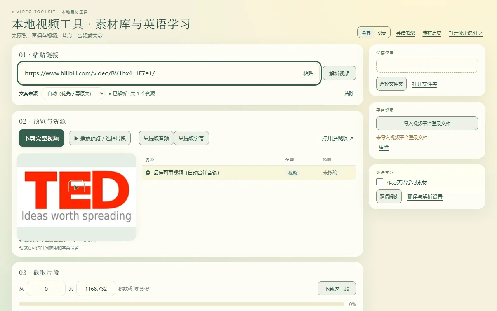
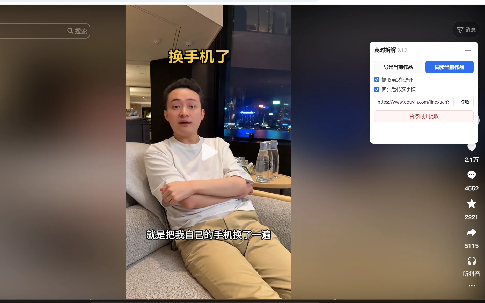

向下浏览
后海字符城 / YuCheinSYQ
CC BY-SA 4.0 · 改编与出处 ↗
三个房间
账号运营
跟着阿亮学AI
账号运营条目收录抖音账号「跟着阿亮学AI」（抖音号 aliang2052）的主页与后台截图。以下数字均来自所附截图，未另作统计。
主页截图可见：获赞 76.0 万，关注 166，粉丝 37.2 万，作品 70。简介可见「全抖音最会用AI的男人；智启亮程创始人 CEO；全网 60 万粉丝 AI 博主」等表述，IP 显示北京。
后台截图可见：粉丝总数 37.2 万；活跃粉丝数 1,787，占比 0.5%；粉丝团人数暂无。标签可见「个人管理-职场技能」「AI达人」。
视频分析截图（标注「跟着阿亮学AI，02/21-08/28」，日期范围为 2026/02/21–2026/08/28）可见：发布视频数 102；平均点赞数 1,973（中位数 376）；平均评论数 52（中位数 7）；IPM 22.7；平均转发数 145（中位数 25）；平均收藏数 747（中位数 150）；动销视频数 0，总销售额 0，总销量 0。
截图标注的重点视频：
- 2026/03/14 11:50，「建议每个人都把这个加到 OpenClaw里…」，点赞 2,267，涨粉 TOP2 2.5 万
- 2026/06/01 18:20，「找到一款可以免费使用的模型：Agnes…」，点赞 3,215，涨粉 TOP1 8.4 万
- 2026/09/01 19:32，「MiniMax H3免费本地+云端自部署教程…」，点赞 5.7 万，点赞 TOP1 5.7 万





知识与规范
知识与规范

创作者 Harness｜内容与变现探索规范
早期规范 · 内容与变现探索 · 非现行剪辑主工作流
创作者 Harness｜内容与变现探索规范
这是较早整理的内容与变现探索规范，用于方向探索、业务规划和账号诊断，不是现在日常剪辑的主工作流。现行剪辑规则见「AI 剪辑工作流」。
它连接产品价值、客户任务、内容体系、真实表达、信任、承接与交付反馈，也可用于选题写稿。
四个入口
按已有目标和材料选择入口，不强迫走完同一套问题。尚无方向时，从经历、能力、资源整理可提供的价值，再验证客户问题和付费假设。已有业务时，从产品与客户情境组织选题体系、信任和承接。已有账号时，按实际材料诊断。任务已经明确，就直接做。
六环诊断
账号诊断按六环核对：产品、受众、内容、信任、承接、交付。有证据的先判断，缺证据的保留未知，并分开证据与假设。不凭播放量下结论，给出一个最小验证动作；材料不够时，先问一个会改变判断的问题。
直接执行
明确要求选题、写稿、改稿或复盘时，直接完成该任务，不先强制做账号诊断。锁定句保持原样。不编造经历、案例、数据或效果。文案写完不会自动配音、做视频、上传或发布。
两种用法
可作为名为 creator-harness 的技能使用，核心文件是 SKILL.md，放置位置以所用宿主的说明为准。也可以使用完整单文件，Markdown 与 TXT 正文相同，包含全部规则、流程、格式与示例，交给能读文件的 AI，只对当前会话生效。无外部依赖。版本 0.1.0，项目自身文本采用 MIT 许可证。
仅通过6个构造样本行为检查，未验证商业效果及跨模型表现，不保证收益

AI 剪辑工作流
现行剪辑工作流 · 默认 Remotion
AI 剪辑工作流
拿到文案后，先做「文案证据素材分流」，再锁本人配音，再按句子检索动效库并实际观看动态，把素材、动效、画面和 A/B 卷交接做进同一条成片。制作默认使用 Remotion。
开拍前简表
开拍前列一张简表，写清：口播与文案、真实截图或录屏、必须展示的信息、发布要求和效果方向。画面导演由制作侧完成。
文案证据素材分流
本人亲历和本地作品，向本人要原片、截图或录屏，再接到动效的进出场；公开资料由制作侧检索和取证。选材时按「已证实 / 当事人观点 / 尚无公开证据」标注。不得用空动画顶替该段要展示的真实内容，也不用旧素材硬凑。
配音、动效与成片
先锁定本人配音，再按句子检索动效库，并实际观看动态后再选用。素材、动效、画面和 A/B 卷的交接，做进同一条成片，而不是分开各做一段再临时拼接。
动效库分层与入库
质量同时对照已认可基准和当次对标，不能低于曾经认可过的作品。库分三层：参考收藏、经过动态验证的可用候选、用户认可基准。未对着动态验证的分析，不得写成已经掌握。明确称赞复刻达 80% 及以上，或明确认为整片、文案与样片搭配得好，才把该实际版本入库；局部称赞只记局部。
新作默认视觉
新视频作品默认使用暖黑底和较淡的浅橙强调，配更淡、更软的静态暗线网格；无外圈橙框，标题大字不叠压。参考和库条目只学动效与机制，不沿用别人的视觉皮肤。这是新作的默认，不是对已认可旧风格的替换。像 Sample15 快切纸卡片、Sample17b 剪纸贴纸这样已经认可的风格，仍然保留。

本地视频工具 · 素材库与英语学习
自用 AI 工具 · Windows 本地应用
本地视频工具 · 素材库与英语学习
给自己做的素材工具，用来收集和阅读素材，不是剪辑主工作流本身：粘贴抖音、B 站、小红书、YouTube 的链接，先预览，再下载完整视频、其中一段、音频或文案；英语视频还能直接变成双语精读材料。
面对的问题
收集对标视频、拆口播文案时，下载、截取片段、转文字分散在好几个工具里，来回切换很费时间。
能做什么
解析链接后先看封面和预览，再决定保存什么。片段可以按秒精确截取，用重新编码避免起点偏移。文案有三种来源：平台字幕、画面字幕识别（可手工框选字幕区域）、语音识别（中文用 SenseVoice，英文用 Whisper large-v3）。解析过的素材自动进入「素材历史」，可以搜索。
英语学习
勾选后生成双语阅读页，标出可迁移的短语和雅思、六级、专八参考词，点一句就能跳回视频的对应位置。缺中文时用本地的 Qwen3-8B 补译，并标记需要校对。
怎么做的
Python 写的本地程序，界面是本机网页，用 Edge 应用窗口打开，配合浏览器里的预览页；识别和翻译模型都在本机跑，也可以换成在线服务。

竞对文案入库 · 博主视频批量进飞书
自用 AI 工具 · 抖音 / B 站 → 飞书文档
竞对文案入库 · 博主视频批量进飞书
这是自用的竞对文案收集工具，不是剪辑主工作流本身。给一个博主的主页链接，就能批量拉下他的作品，把每条视频的标题、简介、标签和口播文案整理好，导进飞书文档，方便集中拆解对标。
面对的问题
拆对标博主，要一条条看视频、手抄文案，条数一多就很难做完。
怎么运作
主页链接 → 拉取作品列表 → 有字幕就直接用，没有就用千问语音识别转成口播稿（图文作品跳过）→ 生成 Markdown → 导入飞书个人空间。
浏览器浮窗入口
叠在抖音、B 站页面上的插件浮窗，可以导出当前作品、勾选拉热评或转逐字稿，也可以直接粘链接提取。
用到的技术
DTK 拉取作品列表，千问 paraformer 语音识别，飞书文档导入。
作品
作品
作品
素材混剪-v4
作品
Claude Code国内安装 + 剪视频
Codex保姆级教程第一期
作品 / 视频海报
沿页面继续浏览 ↓
对标拆解
与创作规范
对标拆解 · 李守洲（个人 IP 方法论博主）
用自己做的竞对文案入库工具，把抖音博主李守洲最近一页 23 条作品的标题、标签和口播文案整理进飞书，先把原始素材收齐，再从里面找他的选题和表达习惯。
创作者 Harness｜内容与变现探索规范
较早的内容与变现探索规范，不是现行剪辑主工作流。它连接产品价值、客户任务、内容体系、真实表达、信任、承接与交付反馈，支持方向探索、业务规划、账号诊断及选题写稿。现行剪辑规则见「AI 剪辑工作流」。
仅通过6个构造样本行为检查，未验证商业效果及跨模型表现，不保证收益
长期素材库